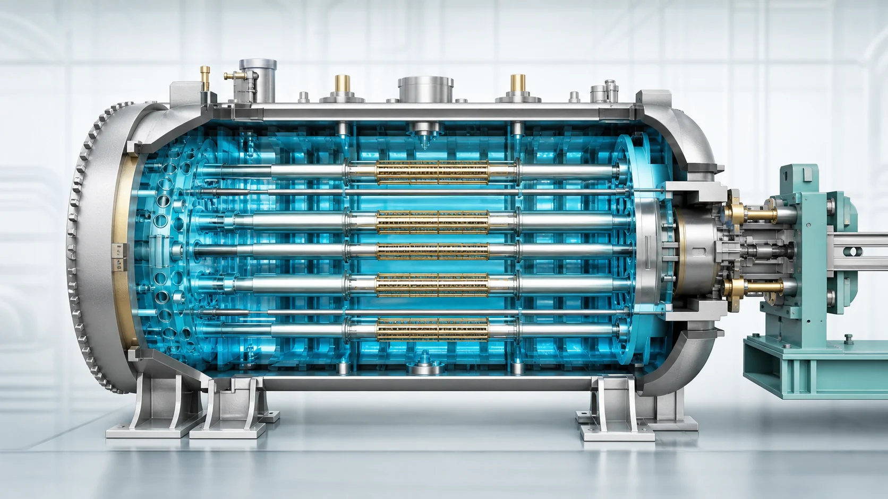
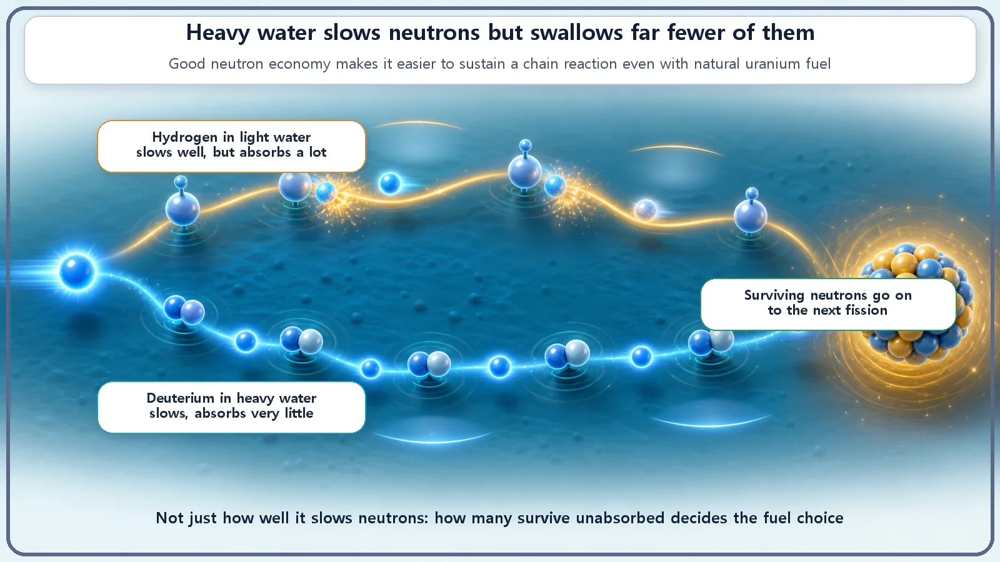
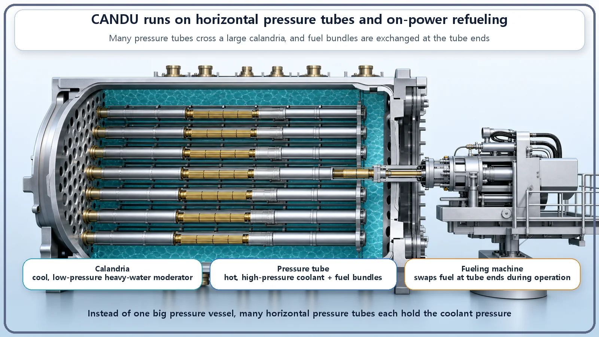

Reactor Types & Plant Systems · 178
Some Water Is Heavier Than Others — Why the CANDU Reactor Insists on Heavy Water
Heavy water is not chosen because it slows neutrons better but because it swallows far fewer of them, and that one property reshapes the fuel and the whole reactor.

CANDU reactors use heavy water because it barely absorbs neutrons. Saving neutrons lets the reactor sustain a chain reaction on natural uranium with only about 0.7% U-235, so no enrichment is needed. The price is expensive heavy water and a larger core.
It's easy to think water is just water. But there is such a thing as "heavy water," and it is exactly what the name says: water that is literally heavier. There is even a reactor that deliberately chooses it, the heavy water reactor developed in Canada and usually called CANDU. That raises an obvious question. If water is water, why go to the trouble of using an expensive, hard-to-make heavy version? Let's follow the reasons one at a time.
What exactly is heavy water?
The ordinary water we drink every day is written H₂O: two hydrogen atoms (H) attached to one oxygen atom (O). In the nuclear field this ordinary water is called light water.
Heavy water puts a slightly special hydrogen in the hydrogen positions. An ordinary hydrogen nucleus contains just one proton. But nature also contains a tiny amount of hydrogen with a neutron sitting next to that proton. This is called deuterium (D). With an extra neutron, it weighs roughly twice as much. Water made with deuterium is heavy water (D₂O). Because each molecule is a bit heavier, heavy water as a whole is a little over 10% heavier than ordinary water, which is how it got its name. It looks and tastes almost exactly like ordinary water, and it is not radioactive or dangerous. It's simply slightly heavy water.
The real reason: saving neutrons
So why use it? The short answer: to lose as few neutrons as possible. That is today's key idea.
For a reactor to keep running, fissions must follow one another in an unbroken chain: neutrons from one split strike more uranium and split it. If a released neutron gets caught somewhere else before it reaches the next uranium nucleus, the chain gradually loses strength. That's why reactor designers care so much about how carefully neutrons are spent. This is called neutron economy, literally the reactor's neutron budget.
The trouble is that the hydrogen in ordinary (light) water catches passing neutrons fairly well. A hydrogen nucleus swallows a neutron and turns into deuterium quite often. What about the deuterium in heavy water? It already holds one neutron, so it has little appetite for another. Deuterium's tendency to capture neutrons is roughly several hundred times smaller than ordinary hydrogen's.
Picture a buffet. A neutron is walking down the buffet line. Hydrogen in light water is a hungry guest who grabs any neutron that passes, so neutrons are often snatched up before they reach the end of the line. Deuterium in heavy water is a guest who already has a neutron on his plate and is full. "I'm good, thanks," he says, and doesn't touch it. He just gives the passing neutron a gentle nudge that slows it down. So neutrons walking through heavy water survive and arrive safely at the next uranium nucleus.

What do you gain? Natural uranium, as is
What's the payoff for saving neutrons? You can use natural uranium as fuel without enriching it. This is the biggest practical benefit of heavy water.
The kind of uranium that actually fissions readily is U-235, and natural uranium contains only 0.7% of it. The other 99%-plus is uranium that does not split easily. So an ordinary light water reactor uses enriched uranium, with the U-235 share raised to about 3–5%. Light water eats so many neutrons that the fuel has to be loaded with extra U-235 to make up for the loss; only then can the chain reaction be sustained. And enrichment requires very demanding, expensive facilities.
The heavy water reactor flips that logic. Its moderator barely eats neutrons, so there's no need to enrich the fuel to compensate. Natural uranium with only 0.7% U-235 is enough to keep the chain reaction going, which means uranium from the mine can be used almost as it is, without costly enrichment plants. In short: skip the expensive preparation (enrichment), and instead run a thrifty kitchen (heavy water) that doesn't waste a single neutron. That is the path the heavy water reactor chose.
Of course, there's no free lunch. Deuterium eats fewer neutrons, but because it is heavier, a single collision doesn't slow a neutron down very much. Slowing neutrons enough takes more water and a bigger core, and above all, producing heavy water itself is expensive. In the end, the heavy water reactor is a design that pays the price of "expensive heavy water and a large core" to buy the benefit of "natural uranium without enrichment."
It even looks different: pressure tubes and refueling on the run
Choosing natural uranium and heavy water changes the shape of the reactor itself. An ordinary light water reactor puts the entire core inside one thick pressure vessel. CANDU instead lines up hundreds of slender tubes holding the fuel and hot, high-pressure coolant (also heavy water), and runs those tubes through a large horizontal tank filled with cool, low-pressure heavy water that serves as the moderator. The slender tubes are called pressure tubes, and the big tank is the calandria. Even though both are heavy water, the systems are separate: inside the tubes (coolant) it is hot and high-pressure, while in the tank (moderator) it is lukewarm and low-pressure.
This layout brings an unexpected bonus. Because each pressure tube can be reached individually, fuel can be changed while the reactor keeps running. A new fuel bundle is pushed in at one end, and a spent bundle is pushed out the other. Compare that with a light water reactor, which has to shut down and open its lid to change fuel. Refueling during operation means less time with the plant shut down.

Common mix-ups
"Isn't heavy water radioactive?" No. Heavy water is just slightly heavier water and is not radioactive in itself. During operation, though, heavy water occasionally absorbs a neutron and a small amount of a substance called tritium builds up, and that is managed separately.
"Heavy water is used because it slows neutrons better than light water." It's actually closer to the opposite. In terms of slowing a neutron down in one collision, light water is better. Heavy water is used not because it "moderates better" but strictly because it "eats fewer neutrons."
"Heavy water is just the coolant." Many people know it only as the coolant, but in a heavy water reactor its real starring role is as the moderator. It does carry heat as the coolant too, but the decisive reason natural uranium can be used is that, as the moderator, it saves neutrons.
Today's summary
- Heavy water (D₂O) is water made with deuterium, hydrogen that carries one extra neutron. It isn't radioactive; it's simply about 10% heavier.
- The real reason CANDU uses heavy water is that it barely absorbs neutrons, keeping the "neutron budget" thrifty (ordinary hydrogen catches neutrons several hundred times more readily).
- That lets the reactor sustain a chain reaction on unenriched natural uranium (about 0.7% U-235), without costly enrichment facilities.
- The price is a large core and expensive heavy water; the design brings pressure tubes, a calandria and refueling during operation.
- Heavy water is chosen because it eats fewer neutrons, not because it moderates better, and its decisive role is as the moderator.
One drop of heavy water ends up reshaping everything from the fuel to the look of the reactor.